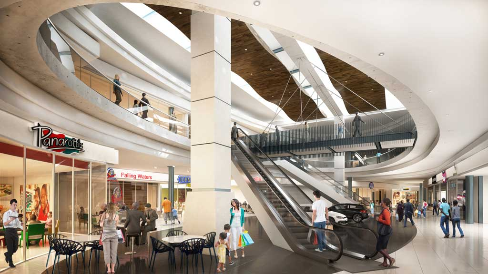
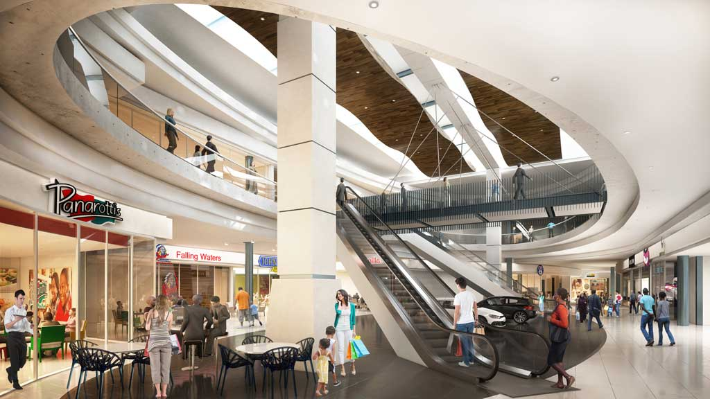

About us
Encompassing over 130 stores and eateries, Pine City Mall is the ultimate regional shopping destination.
Pine City Mall embraces the upper highway ethos, being a friendly, warm and welcoming neighbor. Delighting in celebrating the beauty and bounty of this special corner of South Africa, the 44,000sqm mall is located in the suburb of Pine City in Durban, Kwazulu Natal. Durban city centre is only a 30 minute drive from Pine City, and there is easy access to both the N3 and M13.
The mall is anchored by Woolworths, SuperSpar, Checkers, Game and Dischem. Special features include a much needed Ster Kinekor movie theatre and family oriented food court.